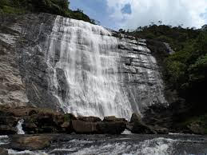
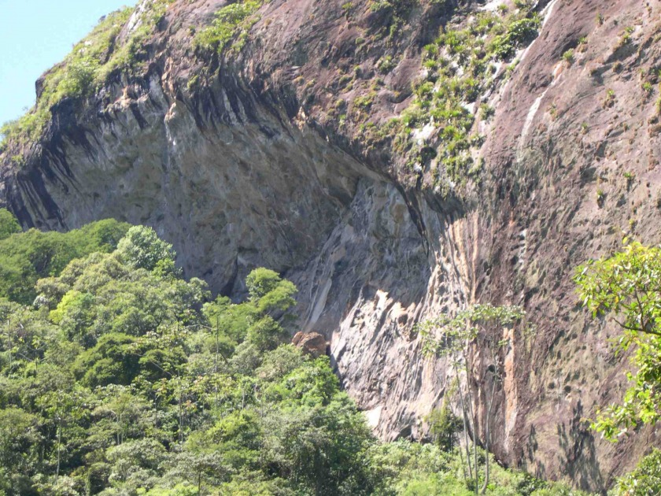
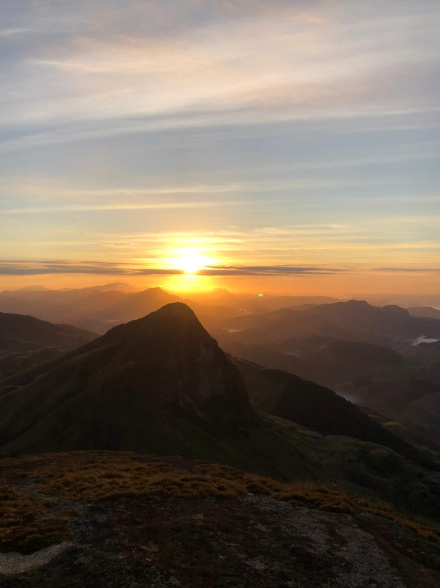
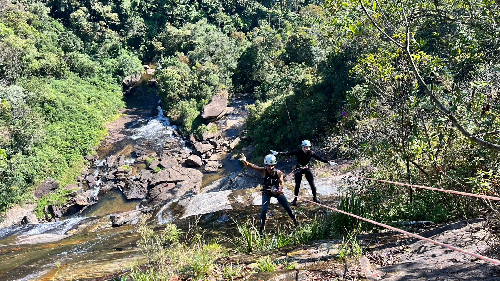
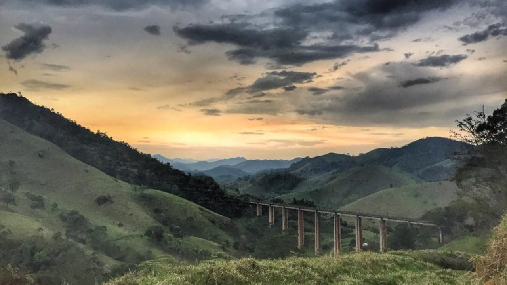
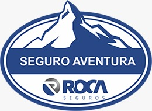
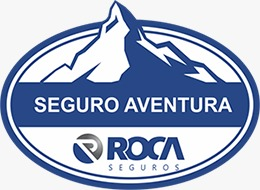

Pacotes de Aventura
Camping

Nosso acampamento está localizado em Passa Vinte, MG, que tem acesso aos melhores lugares para a prática de esportes de aventura. Conta com área gramada para barracas, trailers ou motorhomes, banheiro individual, além de área para alimentação com fogão, churrasqueira, forno a lenha e muito mais.
Reservar agoraCircuito das Cachoeiras
Passeio que envolve visitar 10 cachoeiras e dois mirantes, em algumas delas é até permitido banhar-se. Estão inclusos o transporte e as imagens feitas nos locais de paradas.
Reservar agoraEscalada
Essa atividade ocorre em subida de montanhas, paredões ou formações rochosas, usando equipamentos de segurança. Aqui temos a gruta da pedreira que é um paraíso para os escaladores.
Reservar agoraMontanhismo
Essa atividade ocorre nas montanhas da região, tais como; Pedra Lisa, Pico do Muquém, dentre outros. Todas essas ascensões são realizadas acompanhado de dois guias experientes e com suporte de todo equipamento necessário.
Reservar agoraRapel
Para essa atividade temos vários locais para sua execução, que vão desde rapel na gruta da pedreira, até rapel na cachoeira de Carlos Euler. Além de muitos outros locais secos e molhados..
Reservar agoraTrilhas
Atividades que libertam! São vários níveis, que vão do fácil até o mais difícil. A região oferece uma gama imensa de trilhas a serem exploradas e cada uma com um visual mais bonito que a outra.
Reservar agora
.jpg) 
